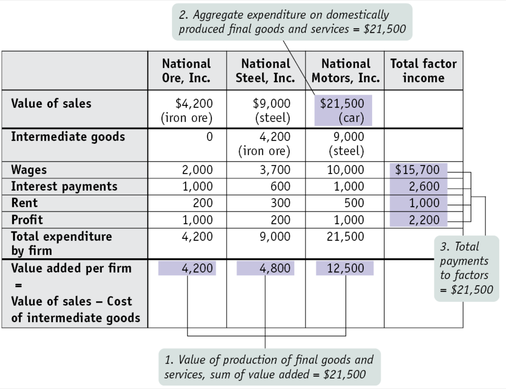

The Circular Flow and GDP¶
Circular Flow¶
In the microeconomics, we have learned that there are 2 markets: the product market and the resource market.
Product market
where the goods and services are traded.Resource market
where the factors of productions are traded.
There are more sectors in the circular flow model as shown in the figure below:
Households
Consumers in the product market pay to the firms.
Suppliers in the factor market get paid from firms.
Tax payers to the government.
Firms
Suppliers in the product market get paid from households.
Consumers in the factor market pay to the households.
Rent
Wage
Interest
Profit
Tax payers to the government.
Government
Consumers in the product market.
Consumers in the factor market.
Tax revenue from households and firms.
Subsidize firms.
Give welfare to households.
Provide public goods to households and firms.
Foreign economies
Domestic firms can export goods and services to the rest of the world.
Domestic households can import goods and services from the rest of the world.
Approaches to Calculate GDP¶
Definitions
- National Economic Accounts
A group of statistics that measure various aspects of the economy’s performance.
e.g. personal income, corporate profits, GDP
- Gross domestic product/GDP
Dollar value of all final goods and services produced within a country in one year.
- GDP per capita
GDP per person.
Expenditure Approach¶
Based on the circular flow diagram, GDP can be estimated by adding expenditures of all households, firms, government and the money earned from trading:
Consumption expenditures (C)
Consumer spending including:Durable goods
Non-durable goods
Services
Investment expenditures (I)
Expenditures by business on plant and equipment (for business purposes)Change of inventories included
If the goods are produced, but not sold, the goods will become inventory.
When the goods are sold, the inventory will decrease.
Changes in inventory will be included in GDP.
Government expenditures (G)
Services provided by government.
Goods and services consumed by government.
Exports and imports (X)
Export - Import
Imports should not be included which are not produced in the domestic.
GPD by expenditure approach:
GDP = C + I + G + X
Income Approach¶
Income approach is to add up all the income that was earned in the economy:
Rent
Wage
Interest
Profit
Indirect business taxes (business licenses)
Depreciation
Value Added Approach¶
Value added approach is to add up the dollar value added at each stage of the production process.
Example¶
Suppose there are 3 companies in an economy as shown in the figure below. National Motors who uses steel from National Steel produces the final goods, cars. National Steel uses iron ore from National Ore to produces steel.
Expenditure approach
Value of the final goods
Income approach
Add up all the income
Value added approach
National Ore
Value generated by producing iron ore is $4,200.
National Steel
Value generated by producing steel is $9,000 - $4,200.
National Steel uses the intermediate goods (iron ore) from National Ore.
Value of National Ore is deducted.
National Motors
Value generated by producing cars is $21,500 - $9,000.
National Motors uses the intermediate goods (steel) from National Steel.
Value of National Steel is deducted.
Finally, each of these methods should generate the same number.
Items NOT Included in GDP¶
Intermediate goods
Iron ore and steel in the exampleNonproduction transactions
Financial transactions
e.g. stocks, bonds, real estate
But the commission fee of financial transactions is included because it is financial service.Used goods
Transfer payment
e.g. social security and unemployment insurance.
Nonmarket activities
e.g. household production, unpaid workIllegal activities
- Transfer payment
Payment of money for which there are no goods or services exchanged.
Government payments to individuals through social programs such as welfare, student grants, and even Social Security.